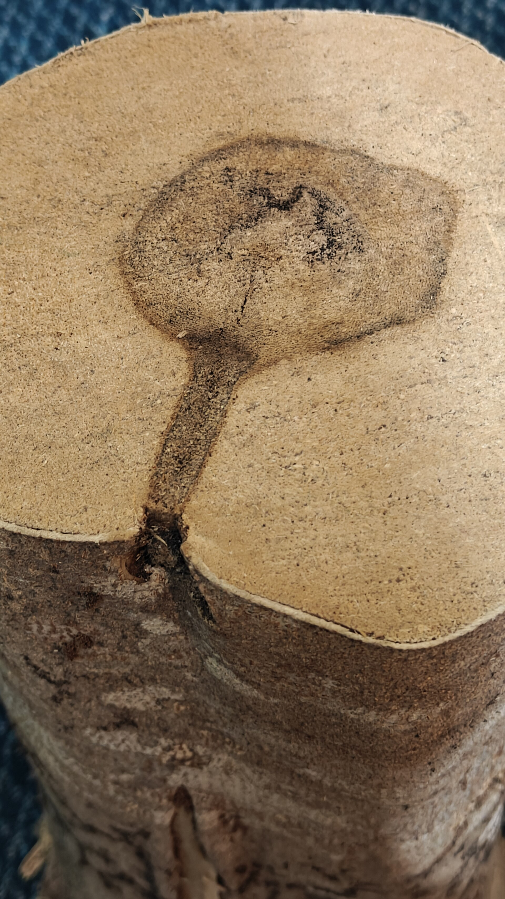

مواد اولیه · ۱۴۰۵/۰۴/۰۸
عود؛ روایتی از چوب و صبر
عود گرانترین چوب عطرسازی است، اما چرا؟ ماجرای درختی که در برابر عفونت مقاومت میکند و رزینی میسازد که قرنها ارزشمند بوده است.

عود چیست
عود، رزینی است که درختان سردهٔ آکیلاریا در پاسخ به عفونت قارچی تولید میکنند. درخت در برابر آسیب مقاومت میکند و در این فرایند، چوبی تیره و معطر شکل میگیرد. همین واکنش دفاعی است که ارزش اقتصادی خارقالعادهای ساخته است.
چرا اینقدر گران است
بالا رفتن تدریجی قیمت عود چند دلیل دارد: رشد بسیار کند درختان، نرخ پایین درختان آلوده در طبیعت و برداشت بیرویه در دهههای گذشته. امروزه بیشتر عود بازار از کشتزارهای تحت مدیریت میآید.
انواع و تفاوتها
عود کامبوجی و لائوسی معمولاً شیرینتر و گلگونهترند، در حالی که عود هندی چرمیتر و دودیتر است. هیچکدام «بهتر» نیست؛ فقط برای کاربردهای متفاوتی ساخته شدهاند.
چطور آن را به کار میبریم
ما عود را هرگز بهتنهایی استفاده نمیکنیم. کمی زعفران یا رز، لبههای تلخ آن را نرم میکند و پایهٔ چرمی و مشک، ماندگاری را بالا میبرد.
بالا رفتن تدریجی قیمت عود چند دلیل دارد: رشد بسیار کند درختان، نرخ پایین درختان آلوده در طبیعت و برداشت بیرویه در دهههای گذشته. امروزه بیشتر عود بازار از کشتزارهای تحت مدیریت میآید.